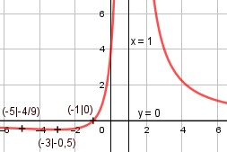

Aufgabe 112 4x + 4 f(x) = -------- (x - 1)2 Quotientenregel erste Ableitung: u = 4x + 4, u' = 4 v = (x - 1)2 Kettenregel: v' = 2 * (x - 1) 4 * (x - 1)2 - 2 * (x - 1) * (4x + 4) f'(x) = --------------------------------------- (x - 1)4 (x - 1) * [4(x - 1) - 2(4x + 4)] f'(x) = ----------------------------------- (x - 1)4 4x - 4 - 8x - 8 -(4x + 12) f'(x) = ----------------- = ------------ (x - 1)3 (x - 1)3 Quotientenregel zweite Ableitung: u = -(4x + 12), u' = -4 v = (x - 1)3 Kettenregel: v' = 3 * (x - 1)2 -4*(x - 1)3 - 3*(x - 1)2 * - (4x + 12) f''(x) = ---------------------------------------- (x - 1)6 (x - 1)2 * [- 4(x - 1) + 3*(4x + 12)] f''(x) = --------------------------------------- (x - 1)6 -4x + 4 + 12x + 36 8x + 40 f''(x) = -------------------- = ---------- (x - 1)4 (x - 1)4 Zur Beurteilung, ob f'''(x) ≠ 0 : (Begründung siehe Aufgabe 105) u = 8x + 40, u' = 8 u' 8 f'''(x) = --- = ---------- ≠ 0 für alle x ≠ 1 v (x - 1)4 Polstellen, Nenner = 0: (x - 1)2 = 0 |ⱱ x - 1 = 0 |+1 x = 1 Nenner = 0 und Zähler = 4 + 4 = 8 ≠ 0 --> senkrechte Asymptote Definitionsbereich: -∞ < x < ∞, x ≠ 1 Waagerechte Asymptote: 4x + 4 f(x) = ---------- geht gegen 0 für x --> ± ∞ (x - 1)2 Wertebereich: -0,5 ≤ f(x) < ∞ Symmetrie zur y-Achse bzw. zum Punkt (0|0): -4x + 4 -4x + 4 f(-x) = ---------- = ---------- = ≠ f(x) (-x - 1)2 (x + 1)2 --> keine Achsensymmetrie -(-4x + 4) 4x - 4 -f(-x) = ------------ = ---------- ≠ f(x) (x + 1)2 (x + 1)2 --> keine Punktsymmetrie Nullstellen: f(x) = 0 4x + 4 f(x) = ---------- = 0 |*(x - 1)2 (x - 1)2 4x + 4 = 0 |-4 4x = -4 |:4 x = -1 Schnittpunkt mit der y-Achse: x = 0 4 * 0 + 4 f(x) = ----------- = 4 (0 - 1)2 Sy(0|4) Extrempunkte: f'(x) = 0 -(4x + 12) ---------- = 0 |*(x - 1)3 (x - 1)3 -4x - 12 = 0 |+4x 4x = -12 |:4 4 * (-3) + 4 x = -3; f(-3) = -------------- = -0,5 (-3 - 1)2 8 * (-3) + 40 f''(-3) = ---------------- > 0 --> (-3 - 1)4 Tiefpunkt (-3|-0,5) Wendepunkte: f''(x) = 0 8x + 40 --------- = 0 |*(x - 1)4 (x - 1)4 8x + 40 = 0 |-40 8x = -40 |:8 x = -5 4 * (-5) + 4 -16 -4 f(-5) = -------------- = ---- = ---- (-5 - 1)2 36 9 f'''(-5) ≠ 0 Wendepunkt (-5|-4/9) Graph:
